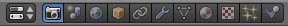

Paneles

El editor Paneles es uno de los lugares con mayor cúmulo de opciones editables pero debemos tener en cuenta que en el arranque del aprendizaje se usan realmente muy pocas. Después, con el paso del tiempo, el diseñador empieza a añadir a sus proyectos matices que les dan calidad, belleza, elegancia, rendimiento...
Para que sepamos en cada momento a cuál nos estamos refiriendo esta es la descripción de los once que se muestran al inicio:
- Render
 . El término render está completamente arraigado en la jerga del diseño 3D y hace referencia al proceso por el cual el modelado 3D se convierte en una imagen fija, en una animación, en una simulación... También llamamos render al propio resultado.
. El término render está completamente arraigado en la jerga del diseño 3D y hace referencia al proceso por el cual el modelado 3D se convierte en una imagen fija, en una animación, en una simulación... También llamamos render al propio resultado.
- Escena . Es uno de los lugares donde se configuran aspectos relacionados con animaciones, videojuegos y simulaciones físicas.
- Mundo
 . Aquí se determinan aspectos que van a tener que ver con el ambiente que envuelve la escena. Un buen ejemplo de lo que se edita aquí son las estrellas del firmamento, la niebla o algunas iluminaciones de carácter global no basadas en puntos luminosos.
. Aquí se determinan aspectos que van a tener que ver con el ambiente que envuelve la escena. Un buen ejemplo de lo que se edita aquí son las estrellas del firmamento, la niebla o algunas iluminaciones de carácter global no basadas en puntos luminosos.
- Objeto . En este panel se editan asuntos como la relación entre dos objetos, por ejemplo una relación de parentesco por la que un objeto queda ligado a otro.
- Restricciones . Blender incluye un buen surtido de este tipo de ediciones. Se trata de obligar a un objeto a hacer o no hacer algo; por ejemplo que la cámara siempre mire a un punto durante una animación.
- Modificadores . Estas son importantísimas herramientas destinadas a ahorrar buenas dosis de trabajo. Desde aquí se crea de manera automática una animación de un objeto que late como un corazón, sólo por poner un ejemplo.
- Datos de objeto . Dentro de un objeto es posible distinguir entre una zona u otra a pesar de formar parte de la misma malla.
- Material
 . Para que un objeto parezca más o menos real habrá que indagar en sus propiedades: color, reflexión...
. Para que un objeto parezca más o menos real habrá que indagar en sus propiedades: color, reflexión...
- Texturas
 . No siempre es suficiente con un material bien diseñado para ganar realismo. Las texturas aportan nuevas cualidades al material.
. No siempre es suficiente con un material bien diseñado para ganar realismo. Las texturas aportan nuevas cualidades al material.
- Partículas . Blender permite animar vértices de los que después determinamos su forma y cualidades; un buen ejemplo es la lluvia.
- Físicas . Cuando ejecutamos el motor de juego (Blender Game) lo que estamos haciendo en realidad es poner en marcha la actuación de las propiedades físicas asignadas al entorno y los objetos. De esa manera vemos cómo un objeto cae atraído por la fuerza de la gravedad y choca contra otros tan solo con pulsar un botón.
¿Habías visto con anterioridad un software con esta forma de organizar las ediciones? ¿Te parece una buena opción?